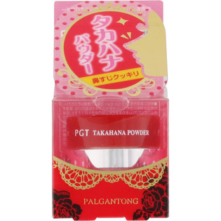
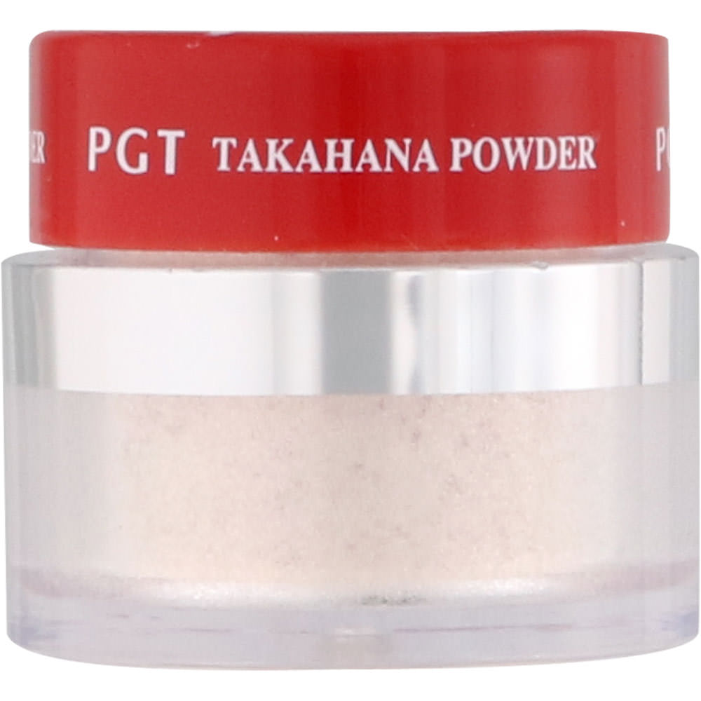

返回列表
产品名称：パルガントン タカハナパウダー

＿ パルガントン タカハナパウダー ２Ｇ
メーカー ＿
JANコード 8809171312811
商品の特徴
お顔の中で高く見せたい部分に使うことで彫りの深い印象を演出できます。アゴなどに使うことで立体的なお顔へ仕上げます。
成分・分量
合成金雲母、酸化チタン、スクワラン、リンゴ酸ジイソステアリル、ヒドロキシアルキル(C16-18)ヒドロキシダイマージリノレイルエーテル、酸化鉄、フェノキシエタノール
用法及び用量
・中栓の穴に指を押し当てた状態で容器を逆様にし、適量を指に取ります。・メイクの仕上げに、鼻筋に伸ばすように、またメイクがヨレないように軽く馴染ませるように塗って下さい。